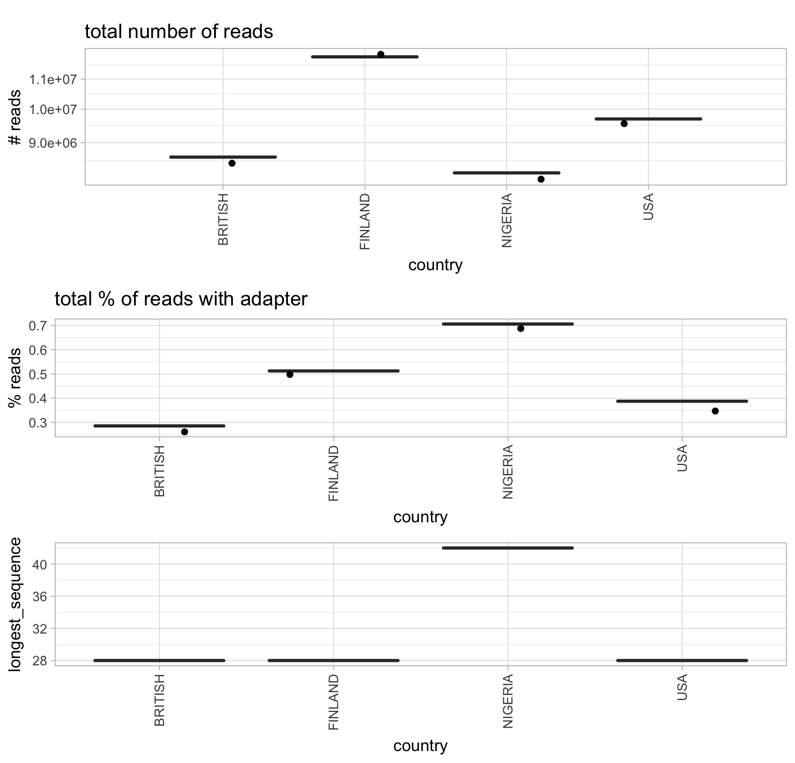
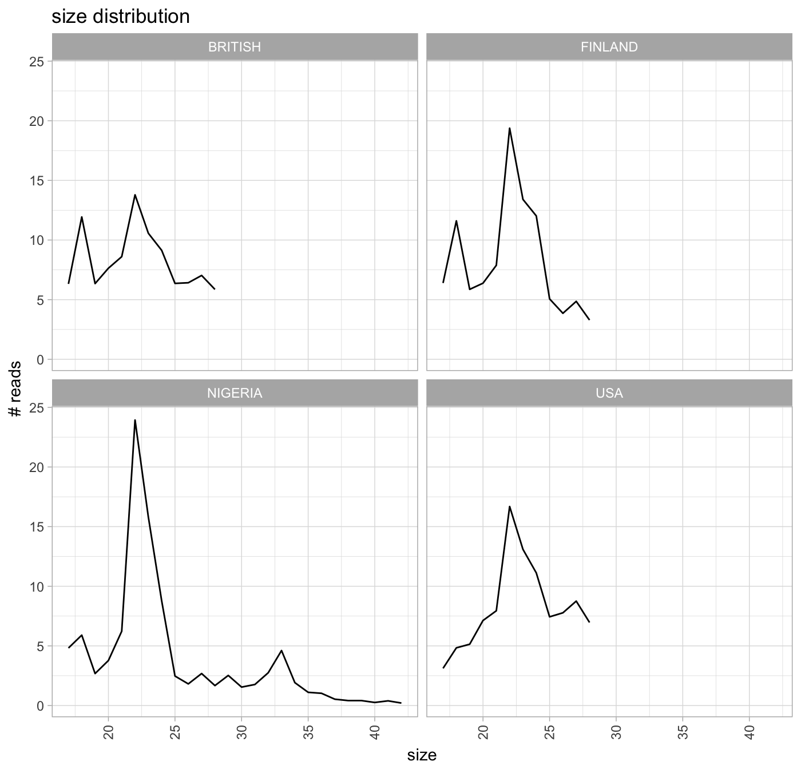
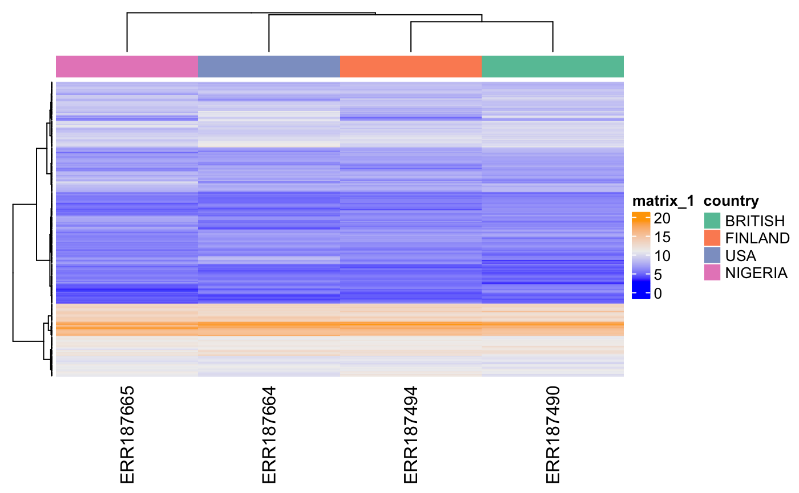
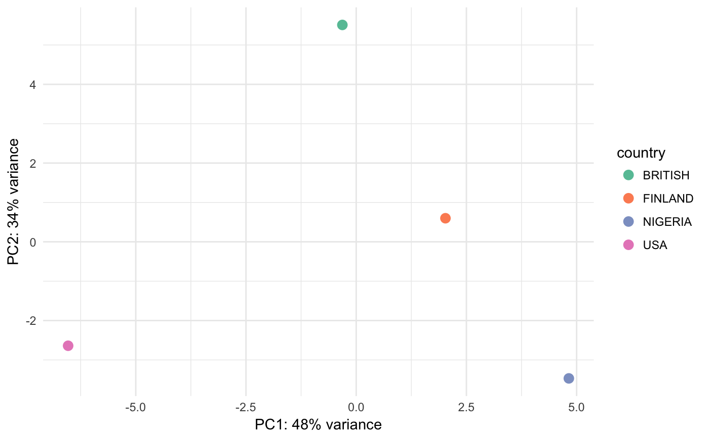
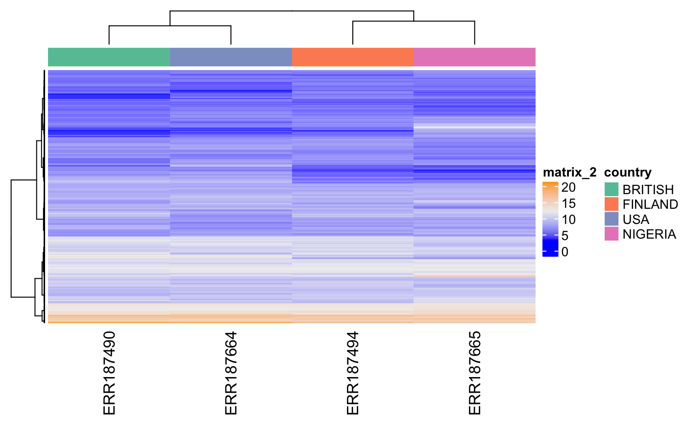
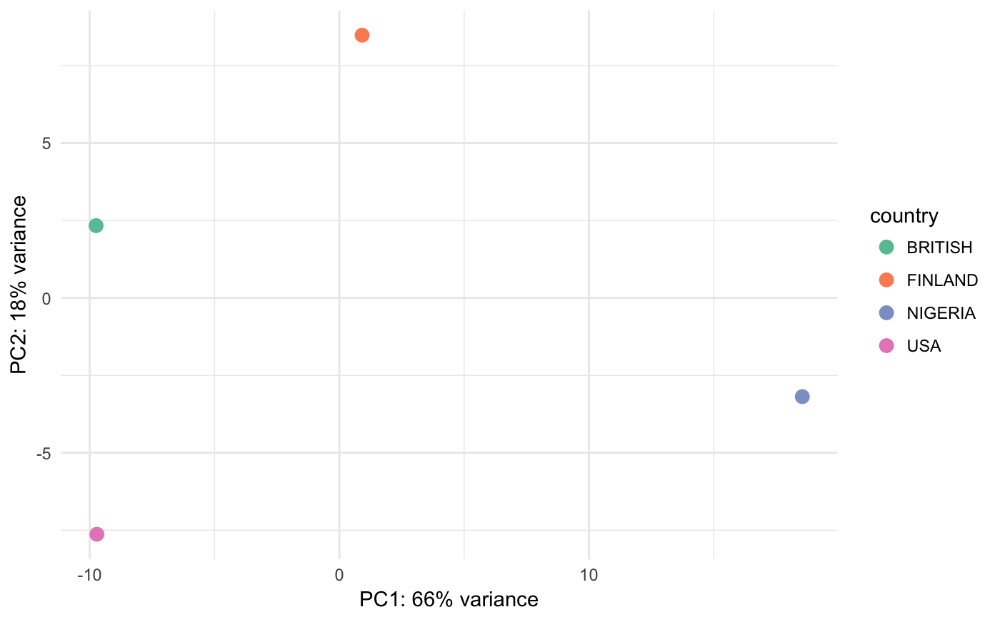

QC for small RNA-seq data analyzed with bcbio
Lorena Pantano
6 June 2018
Source:vignettes/qc-example.Rmd
qc-example.RmdAbstract
bcbioSmallRna package version: 0.0.1
library(knitr)
library(ggplot2)
# Set seed for reproducibility
set.seed(1454944673L)
library(BiocStyle)
knitr::opts_chunk$set(tidy=FALSE,
dev="png",
message=FALSE, error=FALSE,
warning=TRUE)
theme_set(
theme_light(base_size = 11L))
theme_update(
legend.justification = "center",
legend.position = "bottom")library(isomiRs)
library(DEGreport)
library(bcbioSmallRna)
library(ComplexHeatmap)
library(circlize)
data(sbcb)
# bcbioSmallRnaDataSet
bcb <- sbcbExploratory analysis
In this section we will see descriptive figures about quality of the data, reads with adapter, reads mapped to miRNAs, reads mapped to other small RNAs.
Size distribution
After adapter removal, we can plot the size distribution of the small RNAs. We expect the majority of reads to have adapters and we expect a peak at 22 (maybe 33 as well) that indicates miRNA/tRNA enrichment. There are some cases this rule won’t apply.
bcbSmallSize(bcb)
bcbSmallSizeDist(bcb)
miRNA
A microRNA (abbreviated miRNA) is a small non-coding RNA molecule (containing about 22 nucleotides) found in plants, animals and some viruses, that functions in RNA silencing and post-transcriptional regulation of gene expression.[https://en.wikipedia.org/wiki/MicroRNA]
Total miRNA expression annotated with mirbase
miRBase is one of the database that contains the reference miRNA sequences. We used this database to annotate the sequences with miraligner
bcbSmallMicro(bcb)Bottom figure tells how many miRNAs until saturation has been detected. Flatten at low value means few miRNAs capture the majority of the coverage.
Clustering of samples
data = bcbSmallPCA(bcb)
color_by = metadata(bcb)[["interesting_groups"]]palette <- colorRamp2(seq(min(data[["counts"]]),
max(data[["counts"]]), length = 3),
c("blue", "#EEEEEE", "orange"), space = "RGB")
th <- HeatmapAnnotation(df = data[["annotation"]],
col = degColors(data[["annotation"]]))
Heatmap(data[["counts"]],
col = palette,
top_annotation = th,
clustering_method_rows = "ward.D",
clustering_distance_columns = "kendall",
clustering_method_columns = "ward.D",
show_row_names = FALSE,
show_column_names = ncol(data[["counts"]]) < 50)
degPCA(data[["counts"]], data[["annotation"]],
condition = color_by)
isomiRs
isomiR is a term coined by Morin et al. to refer to those sequences that have variations with respect to the reference MiRNA sequence. [https://en.wikipedia.org/wiki/IsomiR]
There are 5 different types of isomiRs:
- ref: perfect match to the sequence on the database
- t3: nucleotides changes at 3’
- t5: nucleotides changes at 5’
- add: nucleotides addition at the 3’
- mism: putatives SNPs

Proportion of isomiRs counting reads (left) or unique sequences (right).
Small RNA clusters
We use seqcluster to identify any type of small RNA. It generates a list of clusters of small RNA sequences, their genome location, their annotation and the abundance in all the sample of the project. The next figure explain the algorithm used for that and the way to use it for differential expression analyses.

This file generated by seqcluster, seqcluster.db, can be used with the page reader.html after downloading from here.
See example:

bcbSmallCluster(bcb)## Warning: Transformation introduced infinite values in continuous y-axis## Warning: Removed 92 rows containing non-finite values (stat_boxplot).Reads kept after each filering step(top left). Proportion of sequences detected (top right). SmallRNA proportions (bottom).
Clustering of samples
data = bcbSmallPCA(bcb, "cluster")
color_by = metadata(bcb)[["interesting_groups"]]palette <- colorRamp2(seq(min(data[["counts"]]),
max(data[["counts"]]), length = 3),
c("blue", "#EEEEEE", "orange"), space = "RGB")
th <- HeatmapAnnotation(df = data[["annotation"]],
col = degColors(data[["annotation"]]))
Heatmap(data[["counts"]],
col = palette,
top_annotation = th,
clustering_method_rows = "ward.D",
clustering_distance_columns = "kendall",
clustering_method_columns = "ward.D",
show_row_names = FALSE,
show_column_names = ncol(data[["counts"]]) < 50)
degPCA(data[["counts"]], data[["annotation"]],
condition = color_by)
Session
devtools::session_info()## setting value
## version R version 3.4.4 (2018-03-15)
## system x86_64, darwin15.6.0
## ui X11
## language (EN)
## collate en_US.UTF-8
## tz America/New_York
## date 2018-06-06
##
## package * version date
## acepack 1.4.1 2016-10-29
## annotate 1.56.0 2017-10-31
## AnnotationDbi 1.40.0 2017-10-31
## assertive.base 0.0-7 2016-12-30
## assertive.sets 0.0-3 2016-12-30
## assertthat 0.2.0 2017-04-11
## backports 1.1.2 2017-12-13
## base * 3.4.4 2018-03-15
## base64enc 0.1-3 2015-07-28
## bcbioSmallRna * 0.0.1 2018-06-06
## bindr 0.1.1.9000 2018-06-06
## bindrcpp * 0.2.2.9000 2018-06-06
## Biobase * 2.38.0 2017-10-31
## BiocGenerics * 0.24.0 2017-10-31
## BiocParallel 1.12.0 2017-10-31
## BiocStyle * 2.5.41 2017-10-12
## bit 1.1-12 2014-04-09
## bit64 0.9-7 2017-05-08
## bitops 1.0-6 2013-08-17
## blob 1.1.0 2017-06-17
## caTools 1.17.1 2014-09-10
## checkmate 1.8.5 2017-10-24
## circlize * 0.4.3 2017-12-20
## cluster 2.0.6 2017-03-10
## colorspace 1.3-2 2016-12-14
## commonmark 1.4 2017-09-01
## compiler 3.4.4 2018-03-15
## ComplexHeatmap * 1.17.1 2017-10-25
## ConsensusClusterPlus 1.42.0 2017-10-31
## cowplot 0.9.2 2017-12-17
## crayon 1.3.4 2017-09-16
## data.table 1.11.4 2018-05-27
## datasets * 3.4.4 2018-03-15
## DBI 0.8 2018-03-02
## DEGreport * 1.17.2 2018-06-06
## DelayedArray * 0.4.1 2017-11-07
## desc 1.1.1 2017-08-03
## DESeq2 1.18.1 2017-11-12
## devtools 1.13.4 2017-11-09
## digest 0.6.15 2018-01-28
## DiscriMiner * 0.1-29 2013-11-15
## dplyr 0.7.5 2018-05-19
## edgeR 3.20.9 2018-02-27
## evaluate 0.10.1 2017-06-24
## foreign 0.8-69 2017-06-22
## Formula 1.2-2 2017-07-10
## fs 1.2.2 2018-03-21
## gdata 2.18.0 2017-06-06
## genefilter 1.60.0 2017-10-31
## geneplotter 1.56.0 2017-10-31
## GenomeInfoDb * 1.14.0 2017-10-31
## GenomeInfoDbData 0.99.1 2017-10-13
## GenomicRanges * 1.30.3 2018-02-26
## GetoptLong 0.1.6 2017-03-07
## GGally 1.4.0 2018-05-17
## ggdendro 0.1-20 2016-04-27
## ggplot2 * 2.2.1 2016-12-30
## ggrepel 0.8.0 2018-05-09
## GlobalOptions 0.0.12 2017-05-21
## glue 1.2.0 2017-10-29
## gplots 3.0.1 2016-03-30
## graphics * 3.4.4 2018-03-15
## grDevices * 3.4.4 2018-03-15
## grid * 3.4.4 2018-03-15
## gridExtra 2.3 2017-09-09
## gtable 0.2.0 2016-02-26
## gtools 3.5.0 2015-05-29
## highr 0.6 2016-05-09
## Hmisc 4.1-1 2018-01-03
## hms 0.3 2016-11-22
## htmlTable 1.11.2 2018-01-20
## htmltools 0.3.6 2017-04-28
## htmlwidgets 1.0 2018-01-20
## httpuv 1.3.5 2017-07-04
## IRanges * 2.12.0 2017-10-31
## isomiRs * 1.9.1 2018-06-06
## janitor 1.0.0 2018-03-22
## KernSmooth 2.23-15 2015-06-29
## knitr * 1.20 2018-02-20
## labeling 0.3 2014-08-23
## lattice 0.20-35 2017-03-25
## latticeExtra 0.6-28 2016-02-09
## lazyeval 0.2.1 2017-10-29
## limma 3.34.9 2018-02-22
## locfit 1.5-9.1 2013-04-20
## logging 0.7-103 2013-04-12
## magrittr 1.5 2014-11-22
## MASS 7.3-49 2018-02-23
## Matrix 1.2-14 2018-04-09
## matrixStats * 0.52.2 2017-04-14
## memoise 1.1.0 2017-04-21
## methods * 3.4.4 2018-03-15
## mime 0.5 2016-07-07
## mnormt 1.5-5 2016-10-15
## MultiAssayExperiment 1.4.9 2018-01-08
## munsell 0.4.3 2016-02-13
## nlme 3.1-131.1 2018-02-16
## nnet 7.3-12 2016-02-02
## Nozzle.R1 1.1-1 2013-05-15
## parallel * 3.4.4 2018-03-15
## pillar 1.1.0 2018-01-14
## pkgconfig 2.0.1 2017-03-21
## pkgdown 1.0.0 2018-05-03
## plyr 1.8.4 2016-06-08
## psych 1.8.4 2018-05-06
## purrr 0.2.5 2018-05-29
## R6 2.2.2 2017-06-17
## RColorBrewer 1.1-2 2014-12-07
## Rcpp 0.12.17 2018-05-18
## RCurl 1.95-4.10 2018-01-04
## readr 1.1.1 2017-05-16
## reshape 0.8.7 2017-08-06
## reshape2 1.4.3 2017-12-11
## rjson 0.2.19 2018-05-18
## rlang 0.2.0.9001 2018-06-06
## rmarkdown 1.6.0.9008 2017-10-31
## roxygen2 6.0.1.9000 2017-10-31
## rpart 4.1-13 2018-02-23
## rprojroot 1.2 2017-01-16
## RSQLite 2.0 2017-06-19
## rstudioapi 0.7 2017-09-07
## S4Vectors * 0.16.0 2017-10-31
## scales 0.5.0 2017-08-24
## shape 1.4.4 2018-02-07
## shiny 1.0.5 2017-08-23
## shinydashboard 0.6.1 2017-06-14
## splines 3.4.4 2018-03-15
## stats * 3.4.4 2018-03-15
## stats4 * 3.4.4 2018-03-15
## stringi 1.2.2 2018-05-02
## stringr 1.3.1 2018-05-10
## SummarizedExperiment * 1.8.1 2017-12-19
## survival 2.41-3 2017-04-04
## tibble 1.4.2 2018-01-22
## tidyr 0.8.1 2018-05-18
## tidyselect 0.2.4 2018-02-26
## tools 3.4.4 2018-03-15
## utils * 3.4.4 2018-03-15
## withr 2.1.2 2018-03-15
## XML 3.98-1.10 2018-02-19
## xml2 1.1.1 2017-01-24
## xtable 1.8-2 2016-02-05
## XVector 0.18.0 2017-10-31
## yaml 2.1.19 2018-05-01
## zlibbioc 1.24.0 2017-10-31
## source
## cran (@1.4.1)
## cran (@1.56.0)
## cran (@1.40.0)
## cran (@0.0-7)
## cran (@0.0-3)
## CRAN (R 3.4.0)
## cran (@1.1.2)
## local
## cran (@0.1-3)
## local (lpantano/bcbioSmallRna@NA)
## Github (krlmlr/bindr@b6e6fd6)
## Github (krlmlr/bindrcpp@bd5ae73)
## cran (@2.38.0)
## cran (@0.24.0)
## cran (@1.12.0)
## Bioconductor
## CRAN (R 3.4.0)
## CRAN (R 3.4.0)
## cran (@1.0-6)
## CRAN (R 3.4.0)
## cran (@1.17.1)
## cran (@1.8.5)
## cran (@0.4.3)
## CRAN (R 3.4.4)
## CRAN (R 3.4.0)
## CRAN (R 3.4.1)
## local
## cran (@1.17.1)
## cran (@1.42.0)
## cran (@0.9.2)
## CRAN (R 3.4.1)
## cran (@1.11.4)
## local
## cran (@0.8)
## local (lpantano/DEGreport@c89180e)
## cran (@0.4.1)
## CRAN (R 3.4.1)
## Bioconductor
## cran (@1.13.4)
## cran (@0.6.15)
## cran (@0.1-29)
## cran (@0.7.5)
## cran (@3.20.9)
## cran (@0.10.1)
## CRAN (R 3.4.4)
## cran (@1.2-2)
## CRAN (R 3.4.4)
## cran (@2.18.0)
## cran (@1.60.0)
## cran (@1.56.0)
## cran (@1.14.0)
## Bioconductor
## cran (@1.30.3)
## cran (@0.1.6)
## cran (@1.4.0)
## CRAN (R 3.4.0)
## CRAN (R 3.4.0)
## cran (@0.8.0)
## cran (@0.0.12)
## cran (@1.2.0)
## cran (@3.0.1)
## local
## local
## local
## CRAN (R 3.4.1)
## CRAN (R 3.4.0)
## cran (@3.5.0)
## cran (@0.6)
## cran (@4.1-1)
## CRAN (R 3.4.0)
## cran (@1.11.2)
## cran (@0.3.6)
## cran (@1.0)
## CRAN (R 3.4.1)
## cran (@2.12.0)
## local (lpantano/isomiRs@NA)
## cran (@1.0.0)
## CRAN (R 3.4.4)
## cran (@1.20)
## CRAN (R 3.4.0)
## CRAN (R 3.4.4)
## cran (@0.6-28)
## cran (@0.2.1)
## cran (@3.34.9)
## cran (@1.5-9.1)
## cran (@0.7-103)
## CRAN (R 3.4.0)
## CRAN (R 3.4.4)
## CRAN (R 3.4.4)
## cran (@0.52.2)
## CRAN (R 3.4.0)
## local
## CRAN (R 3.4.0)
## cran (@1.5-5)
## cran (@1.4.9)
## CRAN (R 3.4.0)
## CRAN (R 3.4.4)
## CRAN (R 3.4.4)
## cran (@1.1-1)
## local
## cran (@1.1.0)
## CRAN (R 3.4.0)
## CRAN (R 3.4.3)
## CRAN (R 3.4.0)
## cran (@1.8.4)
## cran (@0.2.5)
## CRAN (R 3.4.0)
## CRAN (R 3.4.0)
## cran (@0.12.17)
## cran (@1.95-4.)
## CRAN (R 3.4.0)
## cran (@0.8.7)
## cran (@1.4.3)
## cran (@0.2.19)
## Github (tidyverse/rlang@ba4fb06)
## Github (rstudio/rmarkdown@ee11543)
## Github (klutometis/roxygen@bbf259d)
## CRAN (R 3.4.4)
## CRAN (R 3.4.0)
## CRAN (R 3.4.1)
## CRAN (R 3.4.1)
## cran (@0.16.0)
## CRAN (R 3.4.1)
## cran (@1.4.4)
## CRAN (R 3.4.1)
## CRAN (R 3.4.0)
## local
## local
## local
## cran (@1.2.2)
## cran (@1.3.1)
## cran (@1.8.1)
## CRAN (R 3.4.4)
## cran (@1.4.2)
## cran (@0.8.1)
## cran (@0.2.4)
## local
## local
## cran (@2.1.2)
## cran (@3.98-1.)
## CRAN (R 3.4.0)
## cran (@1.8-2)
## cran (@0.18.0)
## cran (@2.1.19)
## cran (@1.24.0)